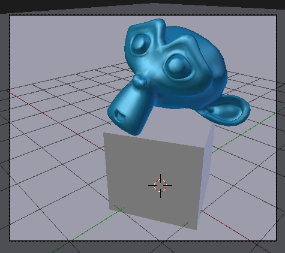

Entorno virtual
Cuando hay materiales que reflejan el entorno se origina un problema si no disponemos del escenario modelado. Y no parece muy razonable tener que modelar toda la estancia sólo para que se refleje en un objeto. Para poner solución a ese asunto vamos a tomar nuestro primer contacto con las texturas aunque en realidad este procedimiento poco tiene que ver con el texturizado de mallas.
Lo primero que necesitamos es una imagen ajustada a nuestras necesidades. Se suelen usar imágenes en formato HDR (High Dynamic Range) o de Alto Rendimiento Dinámico, pero nosotros vamos a usar esta en formato PNG para mayor comodidad.
Una de las propiedades de esta imagen es que se repite de forma modular sin generar sensación de rotura. ¿Qué es lo que vamos a hacer con ella? Le vamos a decir a Blender que la considere como una textura pegada a la cámara y que sea capaz de proyectarla sobre los objetos con capacidad de Reflectividad. De esta manera los objetos recogen la imagen y dará la sensación de que hay todo un entorno para ser reflejado, además de los objetos reales que pueda haber.
Vamos a preparar la escena con algunos objetos.
- Plano. Color hexadecimal 888888.
- Cubo. Color hexadecimal E7E7E7 (color por defecto).
- Mono. Las características del material se definen en la siguiente imagen.
El resultado en el render, con las condiciones de iluminación básica, es este.
Llega el momento de insertar la imagen como textura en el entorno. Nos dirigimos al panel de Texturas y nos aseguramos de estar editando el Mundo y no un material.
No nos alarmaremos por la cantidad de opciones porque nosotros sólo tenemos interés en:
- Darle un nombre. Nosotros la llamamos entorno.
- Cambiar el Tipo de textura de Nubes a Imagen o película.
- Ir a buscar la imagen que nos hemos descargado usando el explorador de archivos.

- Activar la opción Horizonte en la botonera Influencia.
Ahora el render gana realismo y credibilidad al insinuar otros elementos que se reflejan en la superficie de Suzzane, además del cubo.